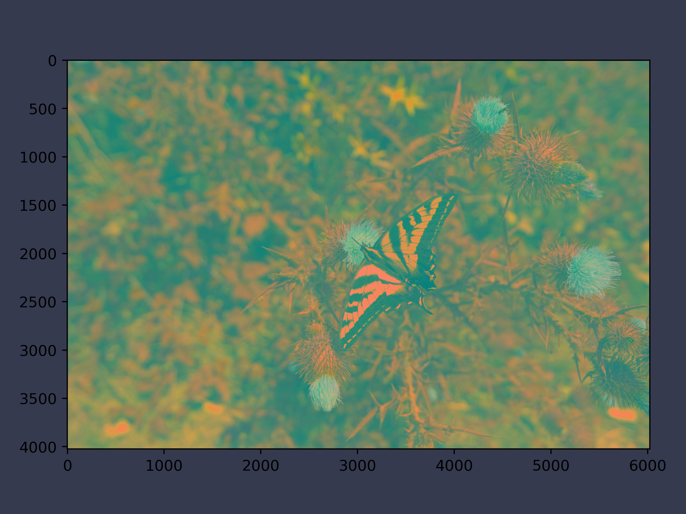

Code for Digital Image Processing Image Formats
Table of Contents
These are the code snippets used in Perception
part of Digital Image Processing.
Introduction
The following code uses the standard matplotlib along with the custom ChalcedonPy which is detailed in its source code here.
The code is used primarily in the following code as a means to save figures for use in slides.
import matplotlib.pyplot as plt import ChalcedonPy as cp # Initialise ChalcedonPy cp.init(save_path="Image-Formats", display_mode="web")
Image Compression from Scratch
The following is a code to compress image to JPEG.
This code only does the image compression part and not the decompression part.
This code is originally written by mVirtuoso21 and adapted.
from collections import Counter import numpy as np # A function definition to do the zigzag of the quantised block def zigzag(matrix: np.ndarray) -> np.ndarray: """ Computes the zigzag of a quantized block :param numpy.ndarray matrix: quantized matrix :returns: zigzag vectors in an array """ # initializing the variables h = 0 v = 0 v_min = 0 h_min = 0 v_max = matrix.shape[0] h_max = matrix.shape[1] i = 0 output = np.zeros((v_max * h_max)) while (v < v_max) and (h < h_max): if ((h + v) % 2) == 0: # going up if v == v_min: output[i] = matrix[v, h] # first line if h == h_max: v = v + 1 else: h = h + 1 i = i + 1 elif (h == h_max - 1) and (v < v_max): # last column output[i] = matrix[v, h] v = v + 1 i = i + 1 elif (v > v_min) and (h < h_max - 1): # all other cases output[i] = matrix[v, h] v = v - 1 h = h + 1 i = i + 1 else: # going down if (v == v_max - 1) and (h <= h_max - 1): # last line output[i] = matrix[v, h] h = h + 1 i = i + 1 elif h == h_min: # first column output[i] = matrix[v, h] if v == v_max - 1: h = h + 1 else: v = v + 1 i = i + 1 elif (v < v_max - 1) and (h > h_min): # all other cases output[i] = matrix[v, h] v = v + 1 h = h - 1 i = i + 1 if (v == v_max - 1) and (h == h_max - 1): # bottom right element output[i] = matrix[v, h] break return output def trim(array: np.ndarray) -> np.ndarray: """ in case the trim_zeros function returns an empty array, add a zero to the array to use as the DC component :param numpy.ndarray array: array to be trimmed :return numpy.ndarray: """ trimmed = np.trim_zeros(array, 'b') if len(trimmed) == 0: trimmed = np.zeros(1) return trimmed def run_length_encoding(array: np.ndarray) -> list: """ finds the intermediary stream representing the zigzags format for DC components is <size><amplitude> format for AC components is <run_length, size> <Amplitude of non-zero> :param numpy.ndarray array: zigzag vectors in array :returns: run length encoded values as an array of tuples """ encoded = list() run_length = 0 eob = ("EOB",) for i in range(len(array)): for j in range(len(array[i])): trimmed = trim(array[i]) if j == len(trimmed): encoded.append(eob) # EOB break if i == 0 and j == 0: # for the first DC component encoded.append((int(trimmed[j]).bit_length(), trimmed[j])) elif j == 0: # to compute the difference between DC components diff = int(array[i][j] - array[i - 1][j]) if diff != 0: encoded.append((diff.bit_length(), diff)) else: encoded.append((1, diff)) run_length = 0 elif trimmed[j] == 0: # increment run_length by one in case of a zero run_length += 1 else: # intermediary steam representation of the AC components encoded.append((run_length, int(trimmed[j]).bit_length(), trimmed[j])) run_length = 0 # send EOB if not (encoded[len(encoded) - 1] == eob): encoded.append(eob) return encoded def get_freq_dict(array: list) -> dict: """ returns a dict where the keys are the values of the array, and the values are their frequencies :param numpy.ndarray array: intermediary stream as array :return: frequency table """ # data = Counter(array) result = {k: d / len(array) for k, d in data.items()} return result def find_huffman(p: dict) -> dict: """ returns a Huffman code for an ensemble with distribution p :param dict p: frequency table :returns: huffman code for each symbol """ # Base case of only two symbols, assign 0 or 1 arbitrarily; frequency does not matter if len(p) == 2: return dict(zip(p.keys(), ['0', '1'])) # Create a new distribution by merging lowest probable pair p_prime = p.copy() a1, a2 = lowest_prob_pair(p) p1, p2 = p_prime.pop(a1), p_prime.pop(a2) p_prime[a1 + a2] = p1 + p2 # Recurse and construct code on new distribution c = find_huffman(p_prime) ca1a2 = c.pop(a1 + a2) c[a1], c[a2] = ca1a2 + '0', ca1a2 + '1' return c def lowest_prob_pair(p): # Return pair of symbols from distribution p with lowest probabilities sorted_p = sorted(p.items(), key=lambda x: x[1]) return sorted_p[0][0], sorted_p[1][0]
from math import ceil import cv2 import numpy as np # define quantization tables QTY = np.array([[16, 11, 10, 16, 24, 40, 51, 61], # luminance quantization table [12, 12, 14, 19, 26, 48, 60, 55], [14, 13, 16, 24, 40, 57, 69, 56], [14, 17, 22, 29, 51, 87, 80, 62], [18, 22, 37, 56, 68, 109, 103, 77], [24, 35, 55, 64, 81, 104, 113, 92], [49, 64, 78, 87, 103, 121, 120, 101], [72, 92, 95, 98, 112, 100, 103, 99]]) QTC = np.array([[17, 18, 24, 47, 99, 99, 99, 99], # chrominance quantization table [18, 21, 26, 66, 99, 99, 99, 99], [24, 26, 56, 99, 99, 99, 99, 99], [47, 66, 99, 99, 99, 99, 99, 99], [99, 99, 99, 99, 99, 99, 99, 99], [99, 99, 99, 99, 99, 99, 99, 99], [99, 99, 99, 99, 99, 99, 99, 99], [99, 99, 99, 99, 99, 99, 99, 99]]) # define window size windowSize = len(QTY) # read image imgOriginal = cv2.imread("/Users/danielmcguiness/Downloads/JPEG-Image-Compressor-main/marbles.bmp", cv2.IMREAD_COLOR) # convert BGR to YCrCb img = cv2.cvtColor(imgOriginal, cv2.COLOR_BGR2YCR_CB) width = len(img[0]) height = len(img) y = np.zeros((height, width), np.float32) + img[:, :, 0] cr = np.zeros((height, width), np.float32) + img[:, :, 1] cb = np.zeros((height, width), np.float32) + img[:, :, 2] # size of the image in bits before compression totalNumberOfBitsWithoutCompression = len(y) * len(y[0]) * 8 + len(cb) * len(cb[0]) * 8 + len(cr) * len(cr[0]) * 8 # channel values should be normalized, hence subtract 128 y = y - 128 cr = cr - 128 cb = cb - 128 # 4: 2: 2 subsampling is used # another subsampling scheme can be used # thus chrominance channels should be sub-sampled # define subsampling factors in both horizontal and vertical directions SSH, SSV = 2, 2 # filter the chrominance channels using a 2x2 averaging filter # another type of filter can be used crf = cv2.boxFilter(cr, ddepth=-1, ksize=(2, 2)) cbf = cv2.boxFilter(cb, ddepth=-1, ksize=(2, 2)) crSub = crf[::SSV, ::SSH] cbSub = cbf[::SSV, ::SSH] # check if padding is needed, # if yes define empty arrays to pad each channel DCT with zeros if necessary yWidth, yLength = ceil(len(y[0]) / windowSize) * windowSize, ceil(len(y) / windowSize) * windowSize if (len(y[0]) % windowSize == 0) and (len(y) % windowSize == 0): yPadded = y.copy() else: yPadded = np.zeros((yLength, yWidth)) for i in range(len(y)): for j in range(len(y[0])): yPadded[i, j] += y[i, j] # chrominance channels have the same dimensions, meaning both can be padded in one loop cWidth, cLength = ceil(len(cbSub[0]) / windowSize) * windowSize, ceil(len(cbSub) / windowSize) * windowSize if (len(cbSub[0]) % windowSize == 0) and (len(cbSub) % windowSize == 0): crPadded = crSub.copy() cbPadded = cbSub.copy() # since chrominance channels have the same dimensions, one loop is enough else: crPadded = np.zeros((cLength, cWidth)) cbPadded = np.zeros((cLength, cWidth)) for i in range(len(crSub)): for j in range(len(crSub[0])): crPadded[i, j] += crSub[i, j] cbPadded[i, j] += cbSub[i, j] # get DCT of each channel # define three empty matrices yDct, crDct, cbDct = np.zeros((yLength, yWidth)), np.zeros((cLength, cWidth)), np.zeros((cLength, cWidth)) # number of iteration on x axis and y axis to calculate the luminance cosine transform values hBlocksForY = int(len(yDct[0]) / windowSize) # number of blocks in the horizontal direction for luminance vBlocksForY = int(len(yDct) / windowSize) # number of blocks in the vertical direction for luminance # number of iteration on x axis and y axis to calculate the chrominance channels cosine transforms values hBlocksForC = int(len(crDct[0]) / windowSize) # number of blocks in the horizontal direction for chrominance vBlocksForC = int(len(crDct) / windowSize) # number of blocks in the vertical direction for chrominance # define 3 empty matrices to store the quantized values yq, crq, cbq = np.zeros((yLength, yWidth)), np.zeros((cLength, cWidth)), np.zeros((cLength, cWidth)) # and another 3 for the zigzags yZigzag = np.zeros(((vBlocksForY * hBlocksForY), windowSize * windowSize)) crZigzag = np.zeros(((vBlocksForC * hBlocksForC), windowSize * windowSize)) cbZigzag = np.zeros(((vBlocksForC * hBlocksForC), windowSize * windowSize)) yCounter = 0 for i in range(vBlocksForY): for j in range(hBlocksForY): yDct[i * windowSize: i * windowSize + windowSize, j * windowSize: j * windowSize + windowSize] = cv2.dct( yPadded[i * windowSize: i * windowSize + windowSize, j * windowSize: j * windowSize + windowSize]) yq[i * windowSize: i * windowSize + windowSize, j * windowSize: j * windowSize + windowSize] = np.ceil( yDct[i * windowSize: i * windowSize + windowSize, j * windowSize: j * windowSize + windowSize] / QTY) yZigzag[yCounter] += zigzag( yq[i * windowSize: i * windowSize + windowSize, j * windowSize: j * windowSize + windowSize]) yCounter += 1 yZigzag = yZigzag.astype(np.int16) # either crq or cbq can be used to compute the number of blocks cCounter = 0 for i in range(vBlocksForC): for j in range(hBlocksForC): crDct[i * windowSize: i * windowSize + windowSize, j * windowSize: j * windowSize + windowSize] = cv2.dct( crPadded[i * windowSize: i * windowSize + windowSize, j * windowSize: j * windowSize + windowSize]) crq[i * windowSize: i * windowSize + windowSize, j * windowSize: j * windowSize + windowSize] = np.ceil( crDct[i * windowSize: i * windowSize + windowSize, j * windowSize: j * windowSize + windowSize] / QTC) crZigzag[cCounter] += zigzag( crq[i * windowSize: i * windowSize + windowSize, j * windowSize: j * windowSize + windowSize]) cbDct[i * windowSize: i * windowSize + windowSize, j * windowSize: j * windowSize + windowSize] = cv2.dct( cbPadded[i * windowSize: i * windowSize + windowSize, j * windowSize: j * windowSize + windowSize]) cbq[i * windowSize: i * windowSize + windowSize, j * windowSize: j * windowSize + windowSize] = np.ceil( cbDct[i * windowSize: i * windowSize + windowSize, j * windowSize: j * windowSize + windowSize] / QTC) cbZigzag[cCounter] += zigzag( cbq[i * windowSize: i * windowSize + windowSize, j * windowSize: j * windowSize + windowSize]) cCounter += 1 crZigzag = crZigzag.astype(np.int16) cbZigzag = cbZigzag.astype(np.int16) # find the run length encoding for each channel # then get the frequency of each component in order to form a Huffman dictionary yEncoded = run_length_encoding(yZigzag) yFrequencyTable = get_freq_dict(yEncoded) yHuffman = find_huffman(yFrequencyTable) crEncoded = run_length_encoding(crZigzag) crFrequencyTable = get_freq_dict(crEncoded) crHuffman = find_huffman(crFrequencyTable) cbEncoded = run_length_encoding(cbZigzag) cbFrequencyTable = get_freq_dict(cbEncoded) cbHuffman = find_huffman(cbFrequencyTable) # calculate the number of bits to transmit for each channel # and write them to an output file file = open("CompressedImage.asfh", "w") yBitsToTransmit = str() for value in yEncoded: yBitsToTransmit += yHuffman[value] crBitsToTransmit = str() for value in crEncoded: crBitsToTransmit += crHuffman[value] cbBitsToTransmit = str() for value in cbEncoded: cbBitsToTransmit += cbHuffman[value] if file.writable(): file.write(yBitsToTransmit + "\n" + crBitsToTransmit + "\n" + cbBitsToTransmit) file.close() totalNumberOfBitsAfterCompression = len(yBitsToTransmit) + len(crBitsToTransmit) + len(cbBitsToTransmit) print( "Compression Ratio is " + str( np.round(totalNumberOfBitsWithoutCompression / totalNumberOfBitsAfterCompression, 1)))
from scipy.fft import dct def dct2d(x): out = dct(dct(x, norm='ortho', axis=0), norm='ortho', axis=1) return out
from scipy.fft import dct def idct2d(x): out = dct(dct(out, type=3, norm='ortho', axis=0), type=3, norm='ortho', axis=1) return out
JPEG Compression
""" Image compression util functions. @author: khe """ import numpy as np from scipy.fft import dct from scipy.signal import convolve2d class Downsampling(): def __init__(self, ratio='4:2:0'): assert ratio in ('4:4:4', '4:2:2', '4:2:0'), "Please choose one of the following {'4:4:4', '4:2:2', '4:2:0'}" self.ratio = ratio def __call__(self, x): # No subsampling if self.ratio == '4:4:4': return x else: # Downsample with a window of 2 in the horizontal direction if self.ratio == '4:2:2': kernel = np.array([[0.5], [0.5]]) out = np.repeat(convolve2d(x, kernel, mode='valid')[::2,:], 2, axis=0) # Downsample with a window of 2 in both directions else: kernel = np.array([[0.25, 0.25], [0.25, 0.25]]) out = np.repeat(np.repeat(convolve2d(x, kernel, mode='valid')[::2,::2], 2, axis=0), 2, axis=1) return np.round(out).astype('int') class ImageBlock(): def __init__(self, block_height=8, block_width=8): self.block_height = block_height self.block_width = block_width self.left_padding = self.right_padding = self.top_padding = self.bottom_padding = 0 def forward(self, image): self.image_height = image.shape[0] self.image_width = image.shape[1] self.image_channel = image.shape[2] # Vertical padding if self.image_height % self.block_height != 0: vpad = self.image_height % self.block_height self.top_padding = vpad // 2 self.bottom_padding = vpad - self.top_padding image = np.concatenate((np.repeat(image[:1], self.top_padding, 0), image, np.repeat(image[-1:], self.bottom_padding, 0)), axis=0) # Horizontal padding if self.image_width % self.block_width != 0: hpad = self.image_width % self.block_width self.left_padding = hpad // 2 self.right_padding = hpad - self.left_padding image = np.concatenate((np.repeat(image[:,:1], self.left_padding, 1), image, np.repeat(image[:,-1:], self.right_padding, 1)), axis=1) # Update dimension self.image_height = image.shape[0] self.image_width = image.shape[1] # Create blocks blocks = [] indices = [] for i in range(0, self.image_height, self.block_height): for j in range(0, self.image_width, self.block_width): for k in range(self.image_channel): blocks.append(image[i:i+self.block_height, j:j+self.block_width, k]) indices.append((i,j,k)) blocks = np.array(blocks) indices = np.array(indices) return blocks, indices def backward(self, blocks, indices): # Empty image array image = np.zeros((self.image_height, self.image_width, self.image_channel)).astype(int) for block, index in zip(blocks, indices): i, j, k = index image[i:i+self.block_height, j:j+self.block_width, k] = block # Remove padding if self.top_padding > 0: image = image[self.top_padding:,:,:] if self.bottom_padding > 0: image = image[:-self.bottom_padding,:,:] if self.left_padding > 0: image = image[:,self.left_padding:,:] if self.right_padding > 0: image = image[:,:-self.right_padding,:] return image class DCT2D(): def __init__(self, norm='ortho'): if norm is not None: assert norm == 'ortho', "norm needs to be in {None, 'ortho'}" self.norm = norm def forward(self, x): out = dct(dct(x, norm=self.norm, axis=0), norm=self.norm, axis=1) return out def backward(self,x): out = dct(dct(x, type=3, norm=self.norm, axis=0), type=3, norm=self.norm, axis=1) return np.round(out) class Quantization(): # Qunatiztion matrices # https://www.impulseadventure.com/photo/jpeg-quantization.html # Luminance Q_lum = np.array([[16,11,10,16,24,40,51,61], [12,12,14,19,26,58,60,55], [14,13,16,24,40,57,69,56], [14,17,22,29,51,87,80,62], [18,22,37,56,68,109,103,77], [24,35,55,64,81,104,113,92], [49,64,78,87,103,121,120,101], [72,92,95,98,112,100,103,99]]) # Chrominance Q_chr = np.array([[17,18,24,47,99,99,99,99], [18,21,26,66,99,99,99,99], [24,26,56,99,99,99,99,99], [47,66,99,99,99,99,99,99], [99,99,99,99,99,99,99,99], [99,99,99,99,99,99,99,99], [99,99,99,99,99,99,99,99], [99,99,99,99,99,99,99,99]]) def forward(self, x, channel_type): assert channel_type in ('lum', 'chr') if channel_type == 'lum': Q = self.Q_lum else: Q = self.Q_chr out = np.round(x/Q) return out def backward(self, x, channel_type): assert channel_type in ('lum', 'chr') if channel_type == 'lum': Q = self.Q_lum else: Q = self.Q_chr out = x*Q return out
import rawpy import cv2 from PIL import Image import numpy as np from multiprocessing.pool import Pool import os import matplotlib.pyplot as plt
lum_downsample = Downsampling(ratio='4:4:4') chr_downsample = Downsampling(ratio='4:2:0') image_block = ImageBlock(block_height=8, block_width=8) dct2d = DCT2D(norm='ortho') quantization = Quantization()
raw = rawpy.imread('/Users/danielmcguiness/Desktop/DSC05719.ARW') # Postprocess image array (Bayer filter -> RGB) rgb_img = raw.postprocess() # Colorspace transform (RGB -> YCrCb) ycc_img = cv2.cvtColor(rgb_img, cv2.COLOR_RGB2YCrCb) plt.imshow(ycc_img) cp.store_fig("ycrcb", close=True)

ycc_img = ycc_img.astype(int)-128
# Downsampling Y = lum_downsample(ycc_img[:,:,0]) Cr = chr_downsample(ycc_img[:,:,1]) Cb = chr_downsample(ycc_img[:,:,2]) ycc_img = np.stack((Y, Cr, Cb), axis=2) plt.imshow(ycc_img) cp.store_fig("ycrcb-downsampling", close=True)

# Create 8x8 blocks blocks, indices = image_block.forward(ycc_img)
def process_block(block, index): # DCT encoded = dct2d.forward(block) if index[2] == 0: channel_type = 'lum' else: channel_type = 'chr' # Quantization encoded = quantization.forward(encoded, channel_type) # Dequantization decoded = quantization.backward(encoded, channel_type) # Reverse DCT compressed = dct2d.backward(decoded) return compressed compressed = np.array(process_block(blocks, indices))
ycc_img_compressed = image_block.backward(compressed, indices) # Rescale ycc_img_compressed = (ycc_img_compressed+128).astype('uint8') # Transform back to RGB rgb_img_compressed = cv2.cvtColor(ycc_img_compressed, cv2.COLOR_YCrCb2RGB) # Write to file Image.fromarray(rgb_img_compressed).save(os.path.join('images', 'result.jpeg'))